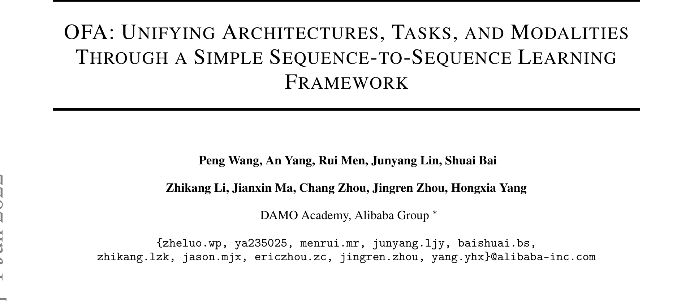
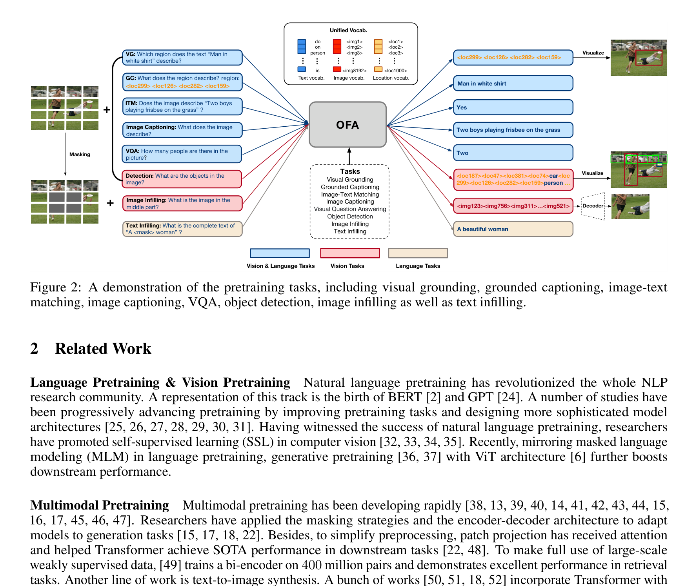
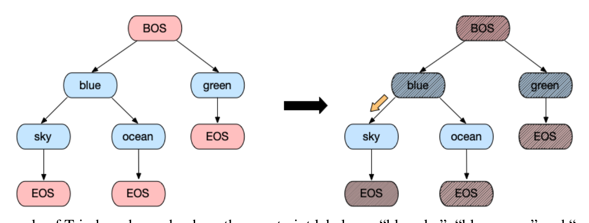

OFA¶
📄 论文链接：arXiv:2202.03052 | PDF
目录¶
核心要点¶
- 统一 Seq2Seq 框架：OFA 将图像生成、视觉定位、图像描述、VQA、目标检测、图像分类、语言建模等多种跨模态和单模态任务，全部统一为 sequence-to-sequence 生成范式，无需任何任务特定的额外层或 head。
- 三大设计属性：OFA 追求 Task-Agnostic（任务无关）、Modality-Agnostic（模态无关）和 Task Comprehensiveness（任务全面性），预训练和微调使用完全相同的 schema 和 instruction-based 格式。
- 小规模数据达到 SOTA：仅使用 20M 公开可用的图文对数据进行预训练，即在多个跨模态下游任务上超越使用数百倍数据的同期模型（如 SimVLM、Florence）。
- 多模态与单模态兼顾：作为多模态预训练模型，OFA 在纯语言任务（GLUE）和纯视觉任务（ImageNet 分类）上也达到了与专用单模态 SOTA 模型可比的性能。
- 零样本迁移能力：OFA 可以通过新的 instruction 直接迁移到未见过的任务（如 grounded QA），也能处理域外数据（动漫、合成图像等），无需微调。
1. 背景与动机¶
1.1 全能模型的三个理想属性¶
构建一个能像人类一样处理尽可能多任务和模态的"全能模型"是 AI 社区的核心目标。OFA 认为，这样的模型应当具备三个关键属性：
- Task-Agnostic (TA)：统一的任务表示，支持分类、生成、自监督预训练任务等不同类型，且预训练和微调之间没有形式差异。
- Modality-Agnostic (MA)：统一的输入输出表示，在所有任务间共享，能够处理不同模态的数据。
- Task Comprehensiveness (TC)：足够丰富的任务种类，以稳健地积累泛化能力。
1.2 现有方法的不足¶
当时的语言和 multimodal 预训练模型普遍无法满足上述属性，主要问题包括：
- 微调时需要额外可学习组件：如 task-specific heads、adapters、soft prompts 等，导致模型结构因任务而异，预训练和微调之间存在结构性差异，也不利于零样本迁移到未见任务。
- 任务特定的公式化方式：预训练、微调和零样本任务通常采用不同的任务定义和训练目标，违反了 TA 原则，也增加了扩展任务种类的负担。
- 模态表示与下游任务耦合：许多 Vision-Language 模型依赖预训练的目标检测器提取区域特征作为图像输入的一部分，虽然在特定闭域数据集上有效，但在开放域数据上容易失败。
1.3 OFA 的定位¶
OFA（One For All）旨在通过一个简单的 sequence-to-sequence 学习框架，同时实现架构、任务和模态的统一。它是 M6 系列的最新工作，首次尝试将以下任务统一到同一个 seq2seq 框架中：text-to-image generation、visual grounding、VQA、image captioning、image classification、language modeling 等。

Figure 1: Examples of various tasks supported by OFA. OFA 将理解与生成、跨模态与单模态的多种任务统一在一个 seq2seq 框架中。2. 方法¶
2.1 I/O 与架构¶
输入表示¶
- 图像：不使用复杂的物体特征提取器，而是直接使用 ResNet 模块将图像 \(x_v \in \mathbb{R}^{H \times W \times C}\) 卷积为 P 个 patch 特征向量。ResNet 模块与 Transformer 联合训练。
- 文本：采用与 BART 相同的 BPE tokenizer，将文本序列转换为 subword 序列后嵌入为特征向量。
统一词表¶
为了在不引入任务特定输出 schema 的情况下处理不同模态，OFA 将所有模态的数据离散化为 token，并使用一个全局共享的统一词表：
- 文本 token：BPE subwords
- 图像 code token：利用 VQGAN 的图像量化，将图像表示为离散 code 序列（如 256×256 图像 → 16×16 code 序列），每个 code 与对应 patch 强相关
- 位置 token：将 bounding box 的连续坐标 \((x_1, y_1, x_2, y_2)\) 均匀离散化为整数 location tokens \(\langle loc_{x1}, loc_{y1}, loc_{x2}, loc_{y2} \rangle\)；物体标签本身就是词语，用 BPE token 表示
Transformer 架构¶
- 采用 encoder-decoder 框架作为所有预训练、微调和零样本任务的统一架构
- Encoder 层：self-attention + FFN
- Decoder 层：self-attention + cross-attention + FFN
- 为稳定训练和加速收敛，加入了 head scaling、post-attention LayerNorm、以及 FFN 第一层后的 LN
- 位置编码：文本和图像分别使用独立的绝对位置 embedding（解耦位置信息与 token/patch embedding），同时文本使用 1D 相对位置偏置，图像使用 2D 相对位置偏置
2.2 任务与模态的统一¶
OFA 的核心创新在于将所有任务统一为 seq2seq 生成范式，通过手工设计的 instruction 来区分不同任务。

Figure 2: A demonstration of the pretraining tasks. 展示了 visual grounding、grounded captioning、image-text matching、image captioning、VQA、object detection、image infilling 和 text infilling 八种预训练任务如何统一为 seq2seq 格式。左侧为 Vision & Language Tasks，中间为 Vision Tasks，右侧为 Language Tasks，底部为统一的词表（Image vocab + Text vocab + Location vocab）。跨模态表示学习（5 个任务）¶
| 任务 | Instruction | 输入 | 输出 |
|---|---|---|---|
| Visual Grounding (VG) | "Which region does the text \(x_t\) describe?" | 图像 + 区域描述文本 | 位置 tokens \(\langle x_1, y_1, x_2, y_2 \rangle\) |
| Grounded Captioning (GC) | "What does the region describe? region: \(\langle x_1, y_1, x_2, y_2 \rangle\)" | 图像 + 位置 tokens | 区域描述文本 |
| Image-Text Matching (ITM) | "Does the image describe \(x_t\)?" | 图像 + 文本 | "Yes" / "No" |
| Image Captioning (IC) | "What does the image describe?" | 图像 | 描述文本 |
| VQA | 问题本身作为 instruction | 图像 + 问题 | 答案 |
单模态视觉表示学习（2 个任务）¶
- Image Infilling：遮蔽图像中间部分作为输入，instruction 为 "What is the image in the middle part?"，模型生成被遮蔽区域的 image codes。这是一种 masked image modeling 的变体。
- Object Detection：instruction 为 "What are the objects in the image?"，模型生成人工标注的物体表示序列（位置 + 标签）。
单模态语言表示学习（1 个任务）¶
- Text Infilling：遵循 BART 的做法，在纯文本数据上进行 text infilling 预训练。
2.3 预训练数据¶
OFA 仅使用公开可用的数据集，并仔细过滤以避免与下游任务验证/测试集的数据泄露。预训练数据统计如下：
| 数据类型 | 预训练任务 | 数据来源 | 图像数量 | 样本数量 |
|---|---|---|---|---|
| Vision & Language | IC + ITM | CC12M, CC3M, SBU, COCO, VG-Cap | 14.78M | 15.25M |
| Vision & Language | VQA | VQAv2, VG-QA, GQA | 178K | 2.92M |
| Vision & Language | VG + GC | RefCOCO, RefCOCO+, RefCOCOg, VG-Cap | 131K | 3.20M |
| Vision | Detection | OpenImages, Object365, VG, COCO | 2.98M | 3.00M |
| Vision | Image Infilling | OpenImages, YFCC100M, ImageNet-21K | 36.27M | - |
| Language | Text Infilling | Pile (Filtered) | - | 140GB |
总计约 20M 图文对用于跨模态预训练，远小于同期模型（SimVLM 使用 1.8B，Florence 使用 900M）。
2.4 训练与推理¶
训练目标¶
统一使用 cross-entropy loss：
其中 \(x\) 为输入，\(s\) 为 instruction，\(y\) 为输出，\(\theta\) 为模型参数。
Trie-based Search（推理优化）¶
对于分类任务，直接在完整词表上优化是不必要的且低效的，模型还可能生成不在候选标签集中的无效标签。OFA 引入了基于前缀树（Trie）的搜索策略：
- 构建一棵 Trie，节点用候选标签集中的 token 标注
- 微调时，只计算 Trie 上有效位置的 log-probabilities，将所有无效 token 的 logits 强制设为 \(-\infty\)
- 推理时，约束生成的标签必须在候选集中

Figure 6: Example of Trie-based search where the constraint labels are "blue sky", "blue ocean" and "green". When computing the log-prob of token "sky", we only consider tokens in {"sky", "ocean"} and forcefully set the logits for all invalid tokens to \(-\infty\).2.5 模型规模¶
OFA 提供了 5 种不同规模的模型配置：
| 模型 | 参数量 | Backbone | Hidden Size | Intermediate Size | #Head | #Enc Layers | #Dec Layers |
|---|---|---|---|---|---|---|---|
| OFA-Tiny | 33M | ResNet50 | 256 | 1024 | 4 | 4 | 4 |
| OFA-Medium | 93M | ResNet101 | 512 | 2048 | 8 | 4 | 4 |
| OFA-Base | 182M | ResNet101 | 768 | 3072 | 12 | 6 | 6 |
| OFA-Large | 472M | ResNet152 | 1024 | 4096 | 16 | 12 | 12 |
| OFA-Huge | 930M | ResNet152 | 1280 | 5120 | 16 | 24 | 12 |
OFA-Base 和 OFA-Large 的大小分别与 BART-Base 和 BART-Large 相近，并使用 BART 权重初始化 Transformer。
3. 网络结构¶
3.1 整体架构概览¶
OFA 的网络结构可以概括为：
输入图像 ──→ ResNet (前3个block) ──→ Patch Features ──┐
├──→ Transformer Encoder ──→ Encoder Output
输入文本 ──→ BPE Tokenizer ──→ Text Embeddings ───────┘ ↑
│ Cross-Attention
Instruction ──→ BPE Tokenizer ──→ Instruction Embeddings ──→ Transformer Decoder ──→ 生成输出
↑
Unified Vocabulary
(subwords + image codes + location tokens)
3.2 关键设计细节¶
- ResNet 视觉编码器：使用 ResNet 的前 3 个 block 提取 patch 特征，与 Transformer 联合训练。相比 ViT 的线性投影，ResNet 提供了更强的归纳偏置。不使用随机 patch sampling。
- 位置编码解耦：不同于简单地将位置 embedding 加到 token embedding 上，OFA 将位置信息与 token/patch embedding 解耦，分别为文本和图像使用独立的绝对位置 embedding。
- 相对位置偏置：文本使用 1D 相对位置偏置（来自 RoBERTa），图像使用 2D 相对位置偏置（来自 BEiT/Swin Transformer）。
- Embedding 共享：embedding 层与 decoder softmax 输出层参数共享。
- 训练稳定性技巧：head scaling、post-attention LN、FFN 第一层后的 LN、stochastic depth (rate=0.1)、weight decay (0.01)、dropout (0.1)。
- 图像分辨率：Tiny/Medium 使用 256×256，Base 使用 384×384，Large/Huge 先用 384×384 或 256×256 预训练，再用 480×480 继续预训练。patch size 固定为 16×16。
- 混合批次训练：每个 batch 包含 2048 个 vision&language 样本、256 个 detection 样本、256 个 image-only 样本和 512 个 text-only 样本。
3.3 下游任务适配方式¶
OFA 的微调不需要添加任何任务特定的层。所有下游任务都通过设计合适的 instruction 来适配，例如：
| 任务 | Instruction | Target |
|---|---|---|
| Image Captioning | "[Image] What does the image describe?" | {Caption} |
| VQA | "[Image] {Question}" | {Answer} |
| Visual Entailment | "[Image] Can image and text1 "{Text1}" imply text2 "{Text2}"?" | Yes/No/Maybe |
| Referring Expression Comprehension | "[Image] Which region does the text "{Text}" describe?" | {Location} |
| Image Generation | "What is the complete image? caption: {Caption}" | {Image} |
| Image Classification | "[Image] What does the image describe?" | {Label} |
| Text Summarization | "What is the summary of article "{Article}"?" | {Summary} |
这种设计使得预训练和微调之间完全没有结构性差异，实现了真正的 Task-Agnostic。
4. 与其他统一框架方法的对比¶
OFA 属于"统一多模态框架"这一研究方向，与 BEiT-3、PaLI、UniPerceiver 等工作有相似的目标但设计哲学不同：
| 维度 | OFA | BEiT-3 | PaLI | UniPerceiver |
|---|---|---|---|---|
| 核心范式 | Seq2Seq 生成 | Masked Modeling (BEiT-style) | Encoder-only + 多任务 head | Encoder-decoder + 检索增强 |
| 任务统一方式 | Instruction-based seq2seq，无额外层 | 统一的 masked modeling 目标 | 多任务并行 head | 统一的 perception 框架 + retrieval |
| 图像编码 | ResNet + VQGAN codes | ViT + VQ-KD tokenizer | ViT-e (SigLIP) | ViT |
| 是否生成式 | 是（自回归生成） | 否（masked prediction） | 部分（captioning 用生成，其他用 head） | 是（encoder-decoder） |
| 图像生成能力 | 有（text-to-image） | 无 | 无 | 无 |
| 预训练数据规模 | 20M 图文对 | 大规模 | 大规模 | 中等规模 |
| 设计哲学 | 极简主义：一个 seq2seq 解决一切 | 统一 masked modeling 作为通用目标 | Scaling + 多任务工程 | 统一感知 + 检索记忆 |
关键差异总结： - OFA 最突出的特点是极致的简洁性——所有任务都是 seq2seq 生成，没有任何任务特定的组件，这在当时是独一无二的。 - BEiT-3 选择了 masked modeling 作为统一目标，更适合理解任务但不天然支持生成。 - PaLI 更偏向工程化的 scaling 路线，保留了任务特定的 head。 - UniPerceiver 引入了检索机制来增强模型的记忆能力。 - OFA 是唯一一个同时支持理解和生成的统一框架（包括 text-to-image generation）。
5. 消融实验的关键发现¶
OFA 的消融实验揭示了多任务预训练中各任务的作用：
- Text Infilling：提升 image captioning (+0.8 CIDEr) 和 VQA (+0.46 Acc.)，但略微降低 ImageNet 分类 (-1.0 Acc.) 和 text-to-image 生成。说明语言预训练增强了跨模态理解，但可能对纯视觉任务有轻微干扰。
- Image Infilling：显著提升 ImageNet 分类 (+1.0 Acc.) 和 text-to-image 生成 (+0.6 CLIPSIM)，但降低 captioning (-0.7 CIDEr) 和 VQA (-0.3 Acc.)。说明 decoder 学习图像生成会与文本生成产生竞争。
- Detection：提升 image captioning (+2.3 CIDEr)、VQA (+0.6 Acc.) 和 ImageNet (+0.8 Acc.)。区域信息对视觉理解和跨模态对齐至关重要。
- Visual Grounding + Grounded Captioning：提升 captioning (+1.4 CIDEr) 和 VQA (+0.5 Acc.)。细粒度的 vision-language 对齐有助于跨模态任务。
这些发现表明，多任务预训练中不同任务之间存在复杂的协同与竞争关系，OFA 通过合理的任务组合实现了整体最优。
6. 总结¶
OFA 的核心贡献在于证明了：一个简单的 seq2seq 框架，配合 instruction-based 任务表示和统一的多模态词表，就足以在架构、任务和模态三个维度上实现统一。它不需要任务特定的 head、adapter 或其他额外组件，仅用 20M 公开图文对数据预训练，就在多个跨模态和单模态任务上达到了 SOTA 或接近 SOTA 的性能。
OFA 的设计哲学对后续工作产生了深远影响，启发了更多基于生成范式的统一多模态模型的研究。其局限性主要在于：(1) 自回归生成的推理速度较慢；(2) 对 instruction 的设计敏感，零样本性能不够稳健；(3) 图像生成质量受限于 VQGAN code 的表达能力。这些问题在后续的工作中得到了不同程度的改进。